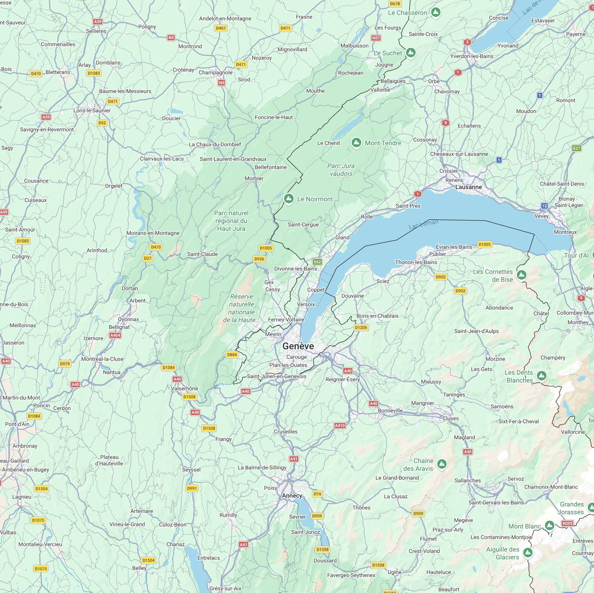

LIVE POSITION
Traffic near Geneva
Aircraft positions may be estimated for up to 60 seconds.
Geneva departures shows airborne flights whose reported origin is GVA/LSGG. Other flights, including unknown origins, appear under general traffic.

- Airline
- Model
- Origin
- Destination
- Ground speed
- Altitude
- Heading
ARRIVALS
Confirmed for Geneva
—
Loading arrival data…
FLIGHT HISTORY
Recent landings
—
Landing times are estimated from when flights leave the live list, not confirmed touchdown. Times are local to Geneva; history is kept for two hours.
Loading flight history…